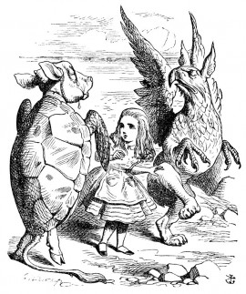

stiff. And the Gryphon never learnt it.'
'Hadn't time,' said the Gryphon: 'I went to the Classics master, though. He was an old crab, HE was.'
'I never went to him,' the Mock Turtle said with a sigh: 'he taught Laughing and Grief, they used to say.'
'So he did, so he did,' said the Gryphon, sighing in his turn; and both creatures hid their faces in their paws.
'And how many hours a day did you do lessons?' said Alice, in a hurry to change the subject.
'Ten hours the first day,' said the Mock Turtle: 'nine the next, and so on.'
'What a curious plan!' exclaimed Alice.
'That's the reason they're called lessons,' the Gryphon remarked: 'because they lessen from day to day.'
This was quite a new idea to Alice, and she thought it over a little before she made her next remark. 'Then the eleventh day must have been a holiday?'
'Of course it was,' said the Mock Turtle.
'And how did you manage on the twelfth?' Alice went on eagerly.
'That's enough about lessons,' the Gryphon interrupted in a very decided tone: 'tell her something about the games now.'
